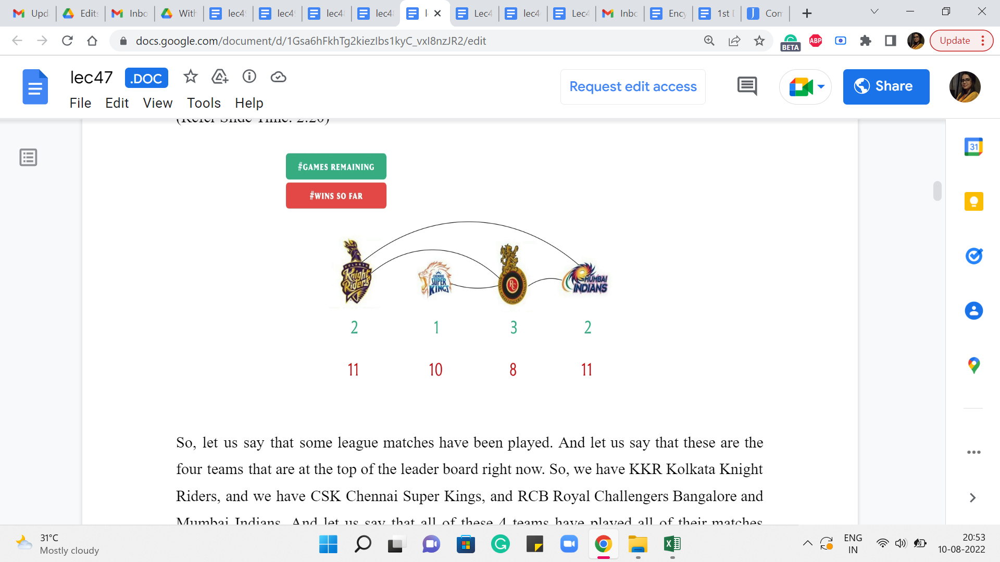
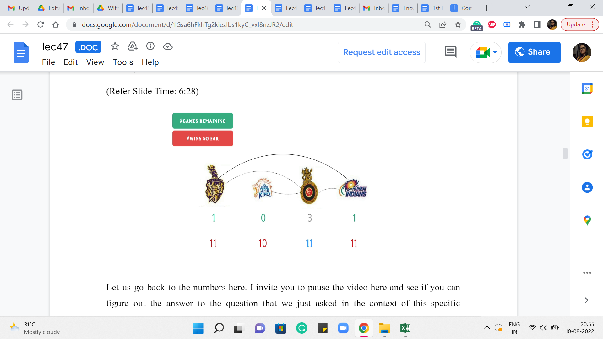
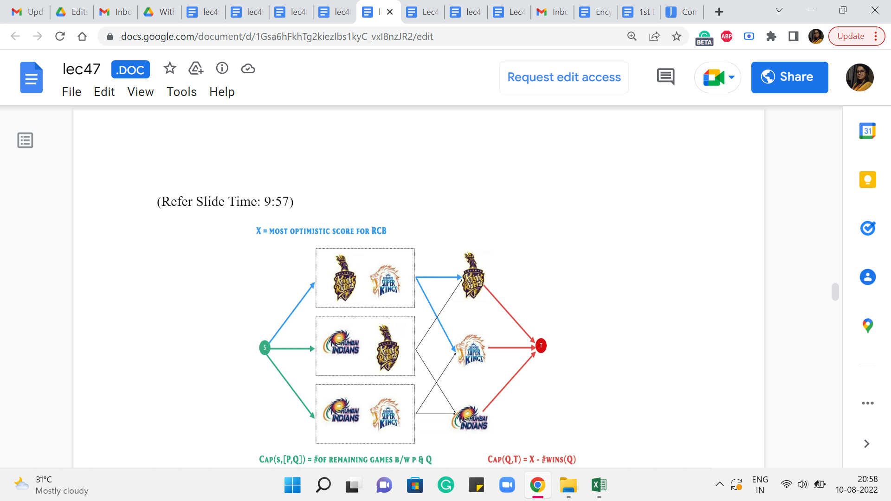

Sport Elimination via MaxFlow
Lecture - 47
Sport Elimination via MaxFlow
(Refer Slide Time: 0:11)

Welcome to the third and the final module of week 8 in Getting Started with Competitive Programming. So, we are still talking about network flows. And in this module, I want to talk about a textbook problem called ‘sport elimination.’ I could not find a programming contest problem that corresponds to this. So, we would not be doing any implementation.
But it is a fun problem to talk about, and goes to show how versatile MaxFlow can be in terms of modeling problems that may not sound like they have anything to do with graphs, at least to begin with. So, let us talk about the problem setting first, and then we will talk about how a flow network could be useful in determining a solution.
So, let us say that we have an IPL tournament going on, which is true at the time of this recording. And let us say that we are at some point in the middle of the tournament where some matches have been played. And some matches still remain. So, before going further, let me just clarify the format of the IPL although you probably know this better than me, but just to make sure that we are on the same page about the setting of the problem.
Let me recall that the IPL tournament is typically a double round robin tournament with playoffs, which just means that in the beginning, we have the league matches where every team faces off every other team twice. So, there are usually 8 teams. And therefore, every team is going to play 14 matches because there are seven other teams. And there are going to be two matches with each team.
So, there are going to be 14 matches that every team plays. So, if you add up all the matches that every team is involved in, that is 14 times 8, which is 112. But of course, as an audience, you only get to see 56 matches, because every match just got counted twice the way I described it. So, there are 56 of these league matches. And then ultimately, there are 4 playoff matches, which will determine the ultimate winner of the tournament.
So, in this problem, I am just going to focus on the league games, not worry about the playoffs. And for simplicity, we are going to assume that no game ends in a tie. So, we are just interested in tracking the number of wins that every team has.
(Refer Slide Time: 2:20)

So, let us say that some league matches have been played. And let us say that these are the four teams that are at the top of the leaderboard right now. So, we have KKR (Kolkata Knight Riders), and we have CSK (Chennai Super Kings), RCB (Royal Challengers Bangalore) and MI (Mumbai Indians). Right. And let us say that all of these 4 teams have played all of their matches against the remaining 4 teams that you do not see. So, which is to say that every team has played these 8 matches.
And let us also assume that they have won all of those 8 matches, and the remaining four teams are at the bottom of the points table. So we are not going to worry about them right now. We are going to focus on just these four teams. And let us say the situation is that these are the matches that are remaining between these four teams. So, between these four teams also some matches have been played.
For example, KKR and CSK have played both of the matches that they had to play between them. RCB has played one match each with each of these teams, and it has one match remaining. Mumbai and KKR – they have played one match, and they have one match remaining between them. And Mumbai and CSK – they have played both of the matches that they had, so they have no matches remaining between them. So, I hope I accounted for all the parents, but if not, the information that you have here about the number of remaining matches tells you everything that you need to know.
Now next, let me also tell you how many matches these teams have won among the games that they have played so far. So, these are the numbers corresponding to their total number of wins. Recall that each of these teams played 8 matches against the four teams that you do not see in this picture. And we assumed that they had won all of those 8 matches. But of course, these teams have played some more games. So, let us look at what may have happened in those. So, let us say that Bangalore lost all of its first matches against Kolkata, Chennai, and Mumbai.
So, its total number of wins just remains at 8 from those other games. It does not go beyond that at the moment. As for Kolkata, let us say that, of course, we already know that it won its first match against Bangalore. And let us say that it won both of the matches against Chennai, and it lost the one match that it had with Mumbai. So, that means that its total number of wins is 8+1 for Bangalore and two for Chennai, and 0 from the match with Mumbai. So, that is a +3 and that is 11.
As for Chennai, we already know that it has one win against Bangalore, and it has lost both of its matches to Kolkata. It also played two matches against Mumbai. And let us say that it won one of those two matches. So, it has one win against Bangalore and one against Mumbai. And that brings its total score up to 8+2 = 10. Now, for Mumbai you know exactly what has happened. So, it is basically a one-one match each against Kolkata, Bangalore, and Chennai. So, that brings its total score up to 8+3, 11. Okay. So, these are the total number of wins that these teams have accumulated.
(Refer Slide Time: 5:23)

And here is the question that we are interested in. This is what is called the sport elimination problem. What we want to know is for our favorite team, and for this example, I am going to say that, that is RCB, I want to know if there is some way that the remaining matches can be played out so that RCB ends up being on the top of the league table? So by that I mean that RCB accumulates at least as many wins as any other team.
So, it is possible that RCB ties for the top spot with some other team and that is fine. But I just want to make sure that there is no other team that scores strictly more wins than RCB. So, remember that this is a question of checking for feasibility. Our predictions for the upcoming matches do not have to be realistic.
They do not have to be based on past statistics of how these teams have fared against each other, or what has happened in a particular ground. None of that is relevant here. I just want to know, hypothetically, can I set the outcomes of the remaining games in such a way that RCB ends up as one of the teams on the top of the table? So, I hope that this question is well formed, and it makes sense.
(Refer Slide Time: 6:28)

Let us go back to the numbers here. I invite you to pause the video here and see if you can figure out the answer to the question that we just asked in the context of this specific example. I am sure all of us have done a lot of this kind of analysis when the actual IPL tournaments are going on. So, most of us have plenty of practice with this kind of question. So, hopefully, this is answerable just by inspection. And this is a particularly simple situation by design. So, pause the video for as long as you need to, and come back when you are ready.
Alright, so since we want RCB to end up at the top, I think it makes sense that we plan for RCB to win all of its remaining matches. Remember, this is purely a hypothetical, and we get to decide the fate of all the remaining matches anyway we like. So, this seems like a greedy choice. But in this case, you can justify it quite easily.
So, what we are going to do is say that for these three matches that RCB is involved in, it is going to win all three of them. And this brings RCB’s total score up to 11. And notice that no matter what happens, RCB’s final score, in terms of its total number of wins, cannot be more than 11. Because among the matches that have already happened, whose fate you cannot change, it has accumulated 8 wins. And the team itself is involved in three more matches.
And this is the best-case scenario estimate on those three matches. So, this is our final score for RCB. But now notice that there is one game that remains between Kolkata and Mumbai. And both of them have accumulated 11 wins so far. And remember, we said that there are no ties. So one of these two teams is going to, in fact, win this game. And whichever team that is, irrespective of how the match goes, you are going to find that you are in a situation where there is a team that has accumulated a score of 12, which is more than what RCB can hope to achieve.
Therefore, in this particular example, the answer to our question is no. No matter how the future matches play out, it is impossible for RCB to end up at the top of the league table. Of course, with a different combination of numbers and with a different set of games that remain to be played, the story could well be different. So, we want to of course address this question in general.
So, given all of this information as input in terms of what are the remaining games, how many wins do these teams have in the games that have been played so far, we want to address the question of whether a team stands eliminated from being on the top or not. So, let us see how we can answer this question by setting up all of this information in an appropriately designed flow network.
(Refer Slide Time: 9:15)

Before getting to the description of the network, the first step is going to be what we just did with this example as well, which is that we are going to assume that our favorite team wins all of its remaining games. So, in these matches, there are really no points for guessing which way it should go. It is clear that we want our team to win all the matches that remain for it.
And we are going to use X to denote the maximum possible score that our team, the one that we are focused on saving from elimination, that is the best possible score that this team can achieve. So, that number is the total number of wins that it has had so far, and the number of matches that remain for it. So, in the previous example, this was essentially 8+3, and this final optimistic score was essentially 11. Now, let us take a look at what other information we have.
(Refer Slide Time: 9:57)
 
So, given that X is the most optimal score for our favorite team, the remaining information that we have to deal with is who are all the other teams that we are worried about, and what are the matches that remain between them? So, in this case, we have three other teams: Kolkata, Mumbai, and Chennai. And we pair them up in all possible ways. So, in this case, we have three teams and three pairings. In general, it is going to be some n teams, and some n choose two pairings.
And for each of those pairings, you have a number that has been given to you, which says that this is the number of matches that these two teams have left between them. So, in the IPL format, this number will be 1 of 0, 1, or 2. But in some other tournament in some other format, this could be any number of games really.
So, our task here boils down to the following. If you fix a pair of teams, let us say P and Q, and let us say they have some number of games remaining between them, let us say Z, then we want to know how to split Z as a sum of two numbers, A and B so that we can say that team P is going to win A of these games, and team Q is going to win the remaining B games. And we want to be able to say this for each pair in such a way that hopefully the total number of wins accumulated by any team does not exceed X. We want to know if this is possible. Right.
We want to know if each of these numbers of games that remain between every pair of teams can be split between them in a way that the total number of wins accumulated by any given team is not too much. So, we are going to try and do that by setting up a flow network on this information. And as a hint, let me tell you that this flow network will have a vertex corresponding to every pair of teams, and a vertex corresponding to every team. So, that is just like what you see on your screen right now.
And apart from these vertices, we will also add two extra vertices, which are going to be our specially designated source and target witnesses. So, our flow network is going to have all of these witnesses. But of course, the description of the network is far from complete. I need to tell you what are the edges, and also what are the capacities of these edges. But this is a great point to pause the video and see if you can complete the design of the flow network for yourself.
Remember that for every vertex that represents a pair of teams, we need to somehow figure out how to talk about the number of matches that remain for that pair. And how this number gets distributed between the two teams that are involved in that pair. Keeping this in mind, try to think about what kind of edges and what kind of capacities you want to add to this network.
So hopefully, you had a chance to pause the video and think through this a little bit. Let me first tell you about how we are going to construct the edges. Already the way that I have positioned the source and the target vertices on the screen might give you a hint about how I want the edges incident on these two vertices. So, we are going to add an edge from the source vertex to every vertex that corresponds to a pair of teams.
And, I am also going to add an edge from every team vertex to the target vertex. This again has a flavor that is similar to what we were doing with the matching problem, although the details here in terms of how the capacities work out and what the flow represents is going to be quite different. So, let us take a look at what is going on between the vertices that represent team pairs, and the vertices that represent the teams.
A very natural thing here would be to connect a team pair with the two teams that are involved in that pair, because the number of matches that remain between, say Mumbai, and Kolkata is none of anybody else’s business. It is going to be something that Mumbai and Kolkata have to figure out between them as to how many matches is going to be won by Mumbai, and how many by Kolkata.
So, with that spirit in mind, what we are going to do is add edges between team pairs and teams so that every team pair has two outgoing edges to the two teams that are involved in that pair. So, that is the construction of the edges in the network. These are all the edges that we are going to have. What still remains to be fixed, of course, is the capacities of all of these edges.
So, once again, if you had this already figured out, then that is great, but if not, then this is a good place to pause and think about what kinds of capacities you want to associate with all of these edges here. So, hopefully you had a chance to think this over. So, let us first look at the edges that go between the source vertex and vertices that represent team pairs.
A natural capacity to impose on these edges is the number of matches that remain to be played by the corresponding team pairs. So, if we have an edge from S to say, the pair Kolkata-Chennai, then we are going to basically look at the number of games that Kolkata and Chennai have remaining between them, and we assign that as the capacity of the edge from the source vertex to the Kolkata-Chennai pair and similarly for all of the other pairs.
Now next, let us consider the edges that connect a team vertex to the target vertex. Here, we somehow have this intuition that this edge is going to carry an amount of flow that is representative of the number of matches that this team has won. And we do not want to allow this number to be larger than X because once it is larger than X, then the fate of RCB comes under question.
So, for example, let us say that RBC’s best possible final score is going to be 11. And let us say that Kolkata has already won 9 matches before this point. In this case, we want to say that Kolkata should not win more than 2 matches among all the remaining games. And we are going to capture this thought, by having the edge from Kolkata to the target vertex have a capacity of 2.
More generally, if you have an edge from our Q to T, where Q is some team and T is the target vertex, then this capacity should be X minus the number of wins that Q has already had in the tournament. So, this is the number of matches that is safe for Team Q to win without putting RCB’s position at the top of the leaderboard at risk. So, this is the capacity of all the edges going from the team vertices to the target vertex.
Now, as for all the remaining edges, it turns out that there is nearly no need to impose a specific capacity constraint on them. So, you could think of them as edges that have infinite capacity. In any case, the amount of flow that goes through these edges is going to be automatically bounded by the capacity of the incoming edges from the source side. So, if you think about it a little bit, then you will see that imposing an infinite capacity and imposing a capacity that is, let us say, a fixed quantity, like the total number of remaining games, essentially amounts to the same thing.
For now, we will just think of these edges as free edges that do not have any explicit capacity constraint. So, that completes our description of the flow network. And now let us think about what can we hope to get out of a maximum flow in this network. What we want is an answer to our question, which is, is it possible to set the outcomes of all the remaining games in such a way that our favorite team ends up at the top of the final leaderboard in terms of its total number of wins?
Well, the claim is the following. If a maximum flow in this network is able to saturate all the edges that are coming out of the source vertex – (and remember that a flow saturates an edge, if it uses it to its full capacity) – so, if the maximum flow can do that, in other words, if the value of the maximum flow is equal to the total number of remaining matches, of course, not counting the ones that our favorite team participated in, because those have been accounted for.
But let us say that the maximum flow is the value is equal to the total number of matches other than these, then we claim that there is in fact, a way of setting the outcomes in such a way that the position of our favorite team is protected at the top of the leaderboard. On the other hand, let us say that the value of the maximum flow falls short of this amount. In other words, even the maximum flow fails to saturate every edge coming out of the source.
This is going to mean that no matter how the outcomes of the remaining games play out, there is no chance for our favorite team to end up at the top of the leaderboard or to tie for the top position in terms of the number of wins, there is going to be some team in every situation that overtakes our favorite team strictly in terms of the total number of wins. So, that is the claim. And let us at least establish some intuition for why this claim is true. First, suppose that there is a flow that saturates every edge that is coming out of the source. In this case, let us propose the following outcomes for the games.
So, in particular, let us look at the Kolkata-Chennai pair. So, there is a certain amount of flow coming into this vertex, which is equal to the number of matches that remain between these two teams, because we know that the flow is saturating every edge coming out of the source. Now, because of the conservation constraint, this number must be split between these two outgoing edges, because this flow has nowhere else to go.
So, let us say the incoming flow was something like 10, then it has to be split in some manner between the two blue edges that are going to the vertices corresponding to Kolkata and Chennai. So, this could be 7+3, it could be 5+5, it could be 1+9, but it is going to be some integral split. You remember from our previous module, that you can always assume that your MaxFlow is integral, it associates an integer with every edge, because our capacities here are integers as well.
So, that is what we have at this point. And you can probably guess, how we want to interpret this flow for the purposes of predicting outcomes. So, let us say, for instance, we had an incoming flow of 10 units and it got split as 7 and 3 with 7 units of flow going to the KKR vertex and three units of flow going to the CSK vertex. This means that we are going to say that Kolkata wins 7 of these remaining 10 matches, and Chennai wins 3 of the remaining 10 matches.
So, this is how we are going to set the outcomes for each of the remaining sets of games that are to be played out between pairs of teams. Now, how do we know that after the matches play out in this particular way, our favorite team is still going to be at the top of the leaderboard. The reason for this is the capacities that were set up on the other side on the edges that go to the target vertex.
So, for any team, notice that the total number of matches they win is equal to the total amount of incoming flow on that vertex with respect to the outcomes that we just described. Now, again, by the conservation constraint, all of this flow has to be pushed out along this edge, because there is only one outgoing edge from this vertex, and it goes to the target vertex. But remember that we carefully set the capacity of this edge to be something like X minus the number of wins that this team has already had.
So, Kolkata has already won a certain number of matches, and the total number of matches, it is going to win, under the predictions that we just established, is going to be some number that is at most X minus the number of wins that it has already had. So, if you add up these two numbers, you get a number that is at most X. And notice that this is true for every single team in this picture.
So, if you do have a flow that saturates every edge coming out of the source, then you can map out a prediction, or you can map out a set of outcomes for all the remaining games in such a way that your favorite team ends up having at least as many wins as any other team. Now on the other hand, it is also true that if somebody gives you a set of predictions, which has this property, that if the matches play out in this way, then your favorite team is at the top of the table, then you can also formulate a corresponding flow, which saturates all the edges coming out of S.
So, the process to do this is very similar to the process that we just used to convert a flow into a set of match outcomes. So, now you just go in the other direction, which is to say that you route the flow based on the information that somebody gives you about how the match outcome should play out. So, once you do that, you will see that the following statement is true, that the maximum flow in this network saturates every edge going out of S, if and only if there is a way for these remaining matches to be played out in a manner that puts our favorite team on the top of the leaderboard.
Therefore, to answer the question, all you have to do is run the MaxFlow algorithm on this flow network. And check if the value of the maximum flow is equal to the number of matches that remain, not counting the ones involving our team, because those we set in the beginning greedily anyway. So, that is essentially the crux of this formulation. And there are a few interesting things that you can think about from here.
The first is, well, if we cannot get to the top of the leaderboard, what is the closest that we can come to the top? Does the MaxFlow give us any meaningful information about this version of the question? The other interesting question you can ask is, whenever your team cannot make it, does the MaxFlow algorithm give you some explainable evidence for why it is impossible for your team to make it to the top?
So, remember, like in the example that we had, we were able to point to two teams, which were, I think, Kolkata and Mumbai. And we said that, well, they have one match between them, and the scores are already threatening RCB. And no matter how this match goes, one of these teams will end up overtaking RCB score. So, this is an explanation that you can give to a friend who knows nothing about network flows.
So, can you use this flow network whenever the flow falls short of the number of remaining games? Or in other words, a flow that fails to saturate all edges coming out at the source – can you use such a flow to build up some explainable evidence for why your team is not going to make it? It turns out that the answer to this question is yes, but we probably do not have the language to talk about how to extract this information from the network flow yet.
So, for this, stay tuned to week 9, which is where we will talk about something called the duality of MaxFlow and MinCut. And once you see this sort of duality, you will be able to probably answer this particular question and hopefully a very interesting way. If you cannot wait to see how this works, then you could look up the pointers in the description of this video to find out more details about how to pull out an explainable piece of evidence for why your team will not make it to the top no matter how the matches play out, and this evidence does not involve detailed case analysis, saying, let us just enumerate all of the possibilities and see what happens.
It is a lot more elegant and succinct than that. So, hopefully, you will have a chance to check it out. Or the other option is to just wait till you are done with week 9 and think about it for yourself. So, with that, it is a wrap on week 8. And when we move on to week 9, it is still going to be about flows. But from a slightly different perspective, it is going to be from the perspective of a closely related problem called the MinCut problem.

And we will look at a couple of examples where it is useful to find the MinCut, and we will do that using the MaxFlow algorithm that we already know. So, I look forward to seeing you there. Thanks so much for watching, and bye for now!